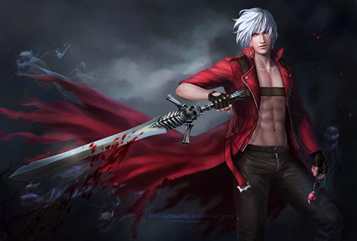

Historia de Devil may Cry

Ordem cronologica dos jogos DMC
- Devil may Cry 3
- Devil may Cry 1
- Devil may Cry 2
- Devil may Cry 4
- Devil may Cry 5
Qual o melhor DMC?
Devil may Cry 3

Devil may Cry 3 é o melhor jogo da franquia por diversos fatores, posso listar alguns motivos
- Missões divertidas
- Boss Insanos
- Diversas Armas Fodas
- Muita variação de inimigos
- Historia muito boa